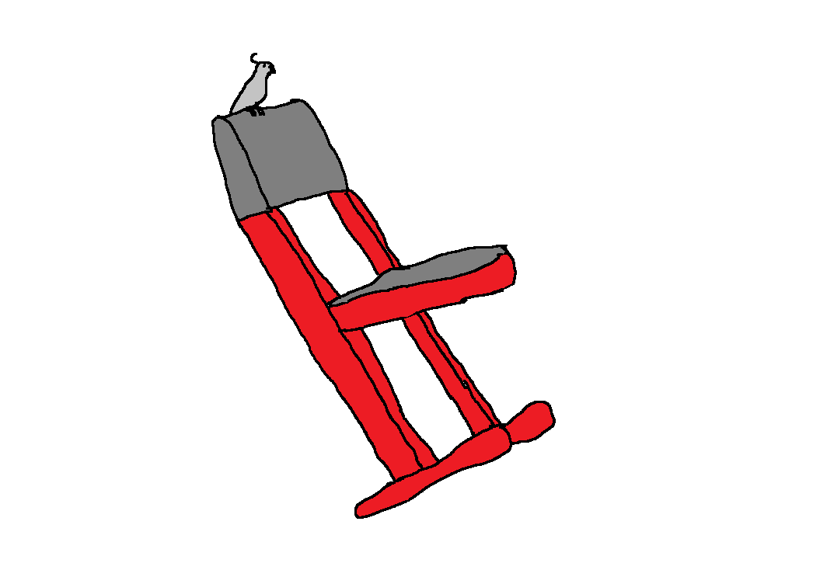

A mai napon kiderült, hogy a Gerzson egy papagájnév
Koszinusz a mai angol órán már többedszerre szólt rá Tangensre, hogy ne lopkodja a tolltartóját, amikor a tanár megjegyezte, hogy a Gerzson nevet papagájoknak szokták adni. Mivel Tangens besorolása még nem biztos, a kutatók ezen inforációk meglétében újra kutatni kezdtek, hátha alátámasztják az állítást. A legújabb kutatások később kimutatták, Tangens leginkább a papagájfélékhez tartozik, de még ez az állítás sem biztos.